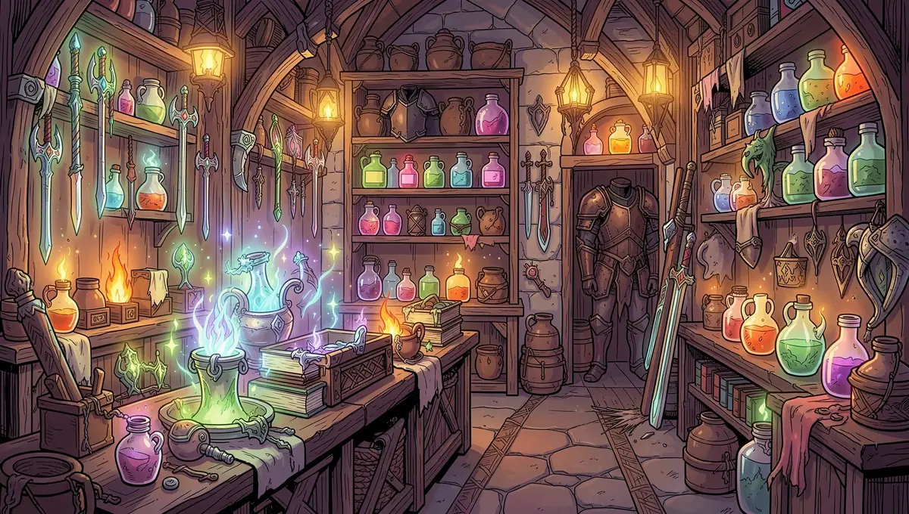
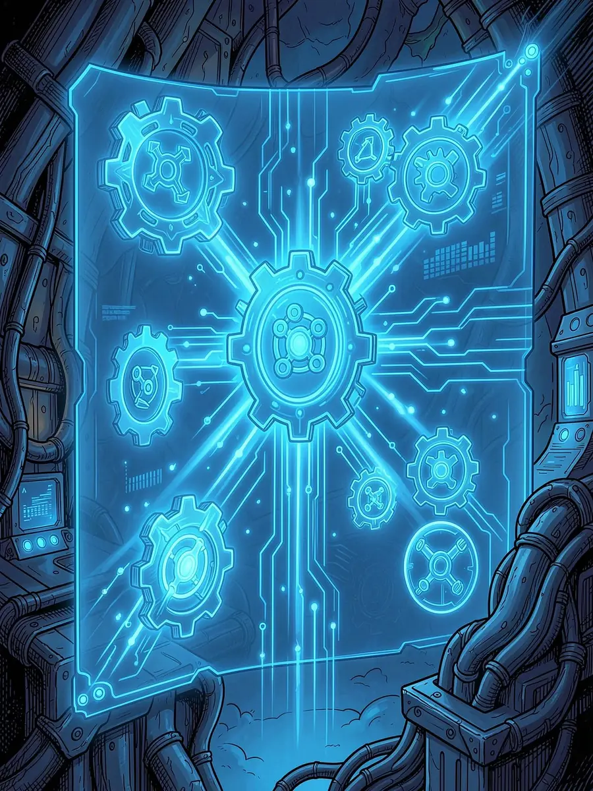

Shop Titans Bot — автоматический кликер для Shop Titans
Максимизируйте доход, автоматизируйте рутину и обгоняйте конкурентов в рейтингах. Бот для Shop Titans работает круглосуточно, пока вы отдыхаете или заняты своими делами.

Что такое Shop Titans Bot
Shop Titans Bot — программа для автоматизации игрового процесса в Shop Titans. Бот повторяет действия игрока: кликает, собирает ресурсы, производит товары и управляет магазином — без вашего постоянного участия.
Программа работает на вашем компьютере и взаимодействует с игрой так же, как человек, только быстрее, точнее и без усталости. Специальные знания не нужны: скачайте, запустите и настройте под свой стиль игры.
Кому подойдёт бот
- Тем, кто хочет развиваться быстрее конкурентов
- Тем, кто устал от монотонных кликов и рутинных задач
- Игрокам с ограниченным временем на игру
- Всем, кто хочет больше дохода в Shop Titans
Ключевые функции бота
Работа 24/7
Запустите бота перед сном — и утром получите полный магазин товаров и накопленные ресурсы.
Умные клики
Система кликов подстраивается под ситуацию в игре и нажимает в нужных местах в нужный момент.
Гибкая настройка
Скорость работы, приоритеты действий, режимы активности — от фарма ресурсов до производства товаров.
Работает локально
Программа работает на вашем компьютере без сторонних серверов. Остановить бота можно в любой момент.

Зачем использовать Shop Titans Bot
Экономия времени
Ручная игра требует часов внимания каждый день. Бот берёт на себя сбор, производство и управление магазином — у вас остаётся время на стратегию, торговлю и ивенты.
Рост дохода
Магазин работает непрерывно: больше произведённых товаров — больше продаж — больше золота.
Преимущество в рейтингах
Пока другие игроки спят, ваш магазин работает — это заметно в гильдейских рейтингах, на аукционах и в сезонных событиях.
Простота
Скачайте демо-версию, введите пароль 1234 и запустите — начать можно за несколько минут.
Попробуйте бесплатно перед покупкой
Демо-версия позволяет оценить основные возможности программы на собственном опыте. Без регистрации, привязки карты и обязательной покупки — просто попробуйте и решите сами.
- Скачайте файл по ссылке на Google Drive и сохраните архив на компьютер.
- Распакуйте архив в любую папку — установка не требуется.
- Запустите бота и введите пароль 1234.
- Настройте параметры и наблюдайте, как бот работает за вас.
Полная версия и продление лицензии
После демо-версии можно купить полную лицензию — она активируется сразу после оплаты и открывает все функции и обновления. Если срок лицензии подходит к концу, продлите её заранее: настройки сохраняются, работа бота не прерывается.
Оплата проходит на Plati.Market — безопасная сделка и мгновенная доставка кода активации.
Демо-версия и полная лицензия
- Демо — бесплатно: знакомство с функциями, ограниченное время работы, базовые настройки
- Полная лицензия: все функции, работа без ограничений по времени, расширенные настройки и режимы, поддержка и обновления
Группа ВКонтакте — вопросы и поддержка
В обсуждении ВКонтакте отвечают на вопросы по установке и настройке, делятся опытом и стратегиями игры, публикуют новости об обновлениях бота.
Shop Titans — о игре
Shop Titans — фэнтезийная игра-менеджер: вы управляете собственным магазином в мире приключений, создаёте оружие, броню и зелья, торгуете с героями, вступаете в гильдии и соревнуетесь с другими игроками.
В игре сотни предметов для крафта, улучшение экипировки, гильдейские войны и сезонные события. Бот избавляет от рутинной части, чтобы оставалось больше времени на интересное. Официальный сайт игры — playshoptitans.com.
Частые вопросы
Сколько стоит демо-версия?
Демо-версия бесплатна. Пароль для входа — 1234.
Нужно ли устанавливать бота?
Нет, достаточно распаковать архив в любую папку и запустить программу.
Как купить или продлить лицензию?
На Plati.Market: код активации приходит сразу после оплаты, настройки при продлении сохраняются.
Где получить помощь?
В обсуждении группы ВКонтакте или в Telegram.